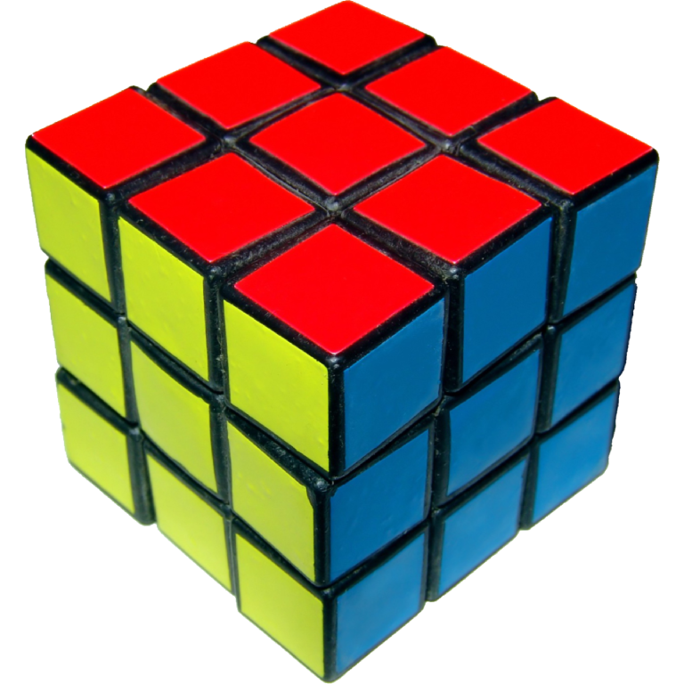
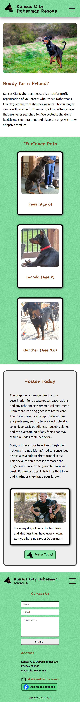
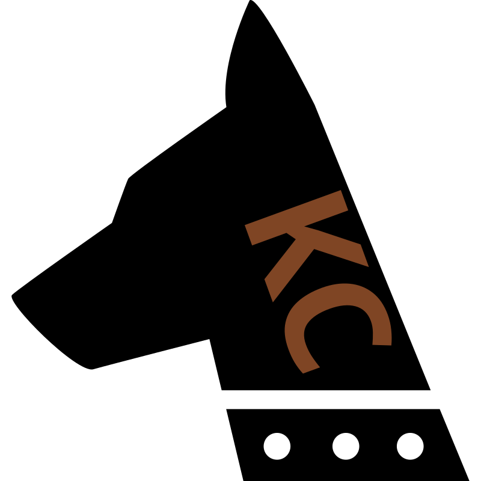
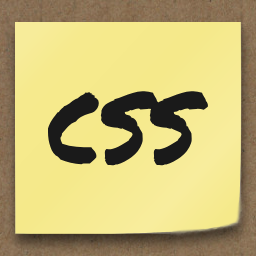
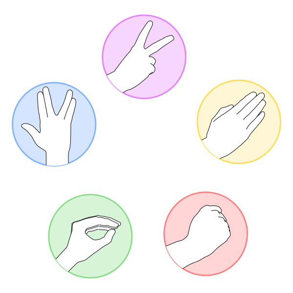
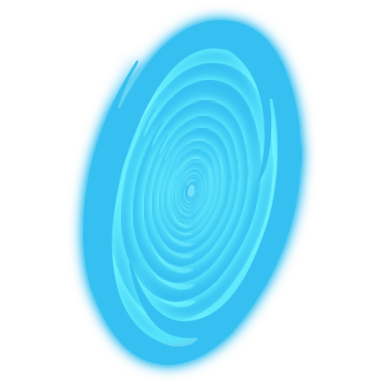

Hello! おはようございます！ こんにちは！ こんばんは！ toki a! Hello! I am , a web developer
About
Hello, I am . I started programming at a young age, inspired in part by Flash (may it rest in peace) and HTML5 games.

As I grew, I continued learning and creating projects using basic HTML and JavaScript. Fast forward to the present, I am a student of Web Development & Digital Media!
In junction with programming languages, I also enjoy learning about human languages and linguistics and solving puzzles such as Rubik's Cubes.
Projects
-
-
logo." class="project-logo--JM">jeremymeyers.dev
jeremymeyers.dev, affectionately called (by me) JMDev, is my portfolio, and coincidentally, the website you are on currently! Originally hobbled together over the course of my scholarship, JMDev has now been redesigned as part of a project for my capstone class &lparWEB 290).
-

Kansas City Doberman Rescue

Kansas City Doberman Rescue is a volunteer organization that rescues Dobermans. I redesigned their website to fix some of its challenges, focusing on its disjointed styles, outdated code, and content fatigue. This project was created as my final project in WEB 122 – CSS Techniques and Projects.

Other Projects
-

CSS Paged Media
CSS Paged Media is a one-page website that details the CSS Paged Media module. Other related features such as page counters and fragmentation are also discussed. This project was created as my midterm project in WEB 122 – CSS Techniques and Projects.
-

RPSLS
RPSLS is a JavaScript game extension of the popular game Rock, Paper, Scissors. This project was created as my final project for WEB 114 – JavaScript I.
-

Portal: The Movie
Portal: The Movie is a high-fidelity Figma prototype of a promotional website for a (currently) fictional movie. This project was created as my final project for WEB 126 – Technical Interface Skills.
Contact
Want to get in touch? Here are some methods of contact:
Email